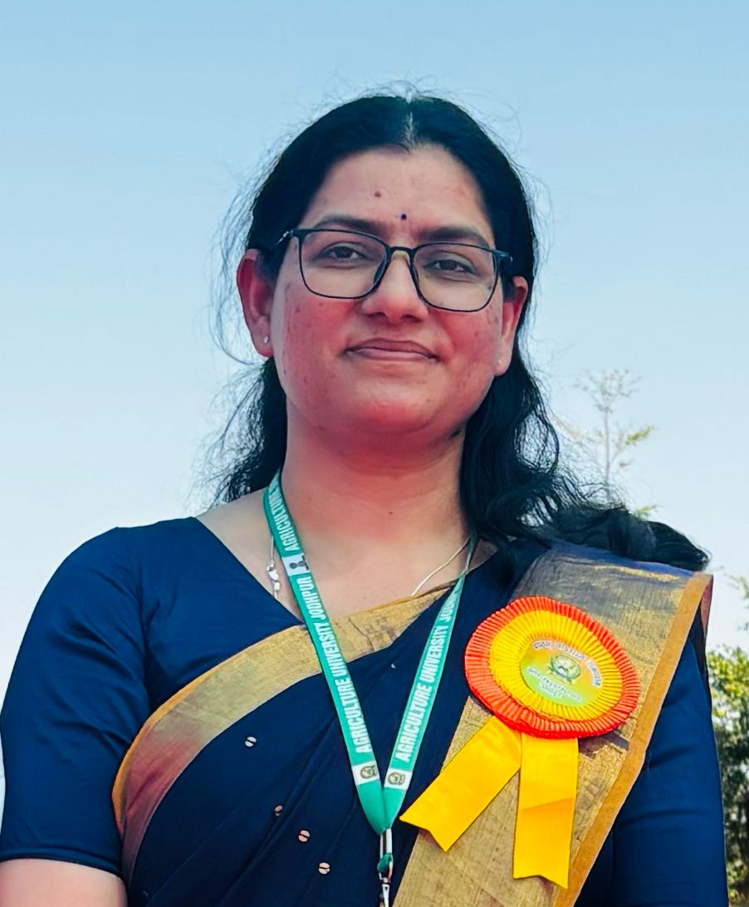

Assistant Professor & Agricultural Meteorologist
Agriculture University Jodhpur, Mandor, Jodhpur – 343204, Rajasthan, India
I am working as an Assistant Professor of Agricultural Meteorology at Agriculture University Jodhpur. My research bridges climate science, remote sensing, and precision agriculture with a focus on crop modelling, machine learning–based rainfall prediction and agrometeorology in arid and semi-arid ecosystems of Rajasthan. I have contributed to national crop forecasting through my work at the Mahalanobis National Crop Forecast Centre and presented research at international venues including Columbia University, New York.
Nodal Officer — Kisan Kaushal Vikas Kendra (since 2022)
Managing Editor — University Newsletter Marudhara
Member Secretary — University Publication Cell
Member Secretary — University Innovation Cell & ICC
Research Projects: 2 | Students Guided: 4
Peer-Reviewed Journal Articles
Books
Agroclimatic Atlas of Rajasthan
Agrometeorology: Principles and Applications in Agriculture
Other Contributions
| Year | Award / Recognition | Awarding Agency |
|---|---|---|
| 2026 | Best Paper Presentation Award | Sher-e-Kashmir University of Agricultural Sciences & Technology, Jammu |
| 2026 | Best Paper Presentation Award | Central Agriculture University, Imphal |
| 2025 | Appreciation Award for University Publications | Agriculture University Jodhpur |
| 2024 | Best Employee Award | Agriculture University Jodhpur |
| 2023 | Vice Chancellor's Appreciation Award | Agriculture University Jodhpur |
| 2023 | Best Paper Award | Agriculture University Jodhpur |
| 2023 | Best Paper Award | Indian Arid Legumes Society |
| 2023 | Best Paper Presentation Award | Tamil Nadu Agriculture University |
| 2022 | Best Paper Award | Association of Agrometeorologists |
| 2017 | Young Scientist Award | Banaras Hindu University |
| 2017 | Best Paper Presentation Award | Banaras Hindu University |
| 2017 | Best Poster Presentation Award | BHU & G.B. Pant University of Agriculture & Technology |
| 2016 | Senior Research Fellowship | ICAR |
| 2016 | Best Team Award | Confederation of Indian Industry, Chandigarh |
| 2016 | Best Poster Presentation Award | UCBMS&H Dehradun, Uttarakhand |
| 2016 | Distinction in Online Training Course | UAS Raichur & IIT Kanpur |
2026 — Sher-e-Kashmir University, Jammu: "AI and ML-Driven Agricultural Advisory Integrating Remote Sensing, Agricultural Meteorology, Large Language Models and Indian Knowledge Systems" — National Conference on Integrating Indian Knowledge Systems with Modern Science for Viksit Bharat.
2026 — International Conference: Himalayan GREENPRINT: Fostering Innovations for Sustainable Agriculture, Livelihoods and Entrepreneurship through Research and Development in the Eastern Himalaya.
2023 — NEASI-2023, Indian Arid Legumes Society: "Crop model as tool for identification, quantification and crop risk assessment."
2023 — AgMIP9, Columbia University, New York: "Climate risk area identification and shock prediction for pearl millet production in North West India."
2023 — International Conference on Millets & Seed Spices: "Calibration and validation of AquaCrop crop model for pearl millet crop for North-West India."
2022 — AGMET-2022: "Rainfall prediction using LSTM — A case study of Uttarakhand."
2022 — TROPMET-2022: Application of machine learning in rainfall prediction.
2017 — Punjab Agricultural University, Ludhiana: Indo-US Symposium "Curbing whitefly-plant virus pandemics — from pesticides to genomics solutions."
2017 — CCS HAU, Hisar: National Seminar on Agrometeorology for Sustainable Development.
2017 — Banaras Hindu University: International Conference on Agricultural Allied Sciences & Biotechnology.
2016 — BHU, Varanasi: International Conference on Climate Change and Its Implications on Crop Production and Food Security.
2016 — ICAR-IIPR, Kanpur: National Symposium on Eco-friendly Approaches for Plant Disease Management.
2016 — Dehradun, Uttarakhand: National Conference on Natural Resource Management Avenues & Application (NRMAA).
Department of Agricultural Meteorology
Agriculture University Jodhpur
Administrative Block, Mandor
Jodhpur – 343204, Rajasthan, India
Email: priyankamah30@gmail.com
Phone: +91 8476975453
For collaborations in agricultural meteorology, crop modelling, remote sensing, or climate data analysis, feel free to reach out.